A Comparative Analysis of LiDAR SLAM-Based Indoor Navigation for Autonomous Vehicles
Qin Zou , Senior Member, IEEE, Qin Sun, Long Chen , Senior Member, IEEE, Bu Nie, and Qingquan Li
Abstract— Simultaneous localization and mapping (SLAM) is a fundamental technique block in the indoor-navigation system for most autonomous vehicles and robots. SLAM aims at building a global consistent map of the environment while simultaneously determining the position and orientation of the robot in this map. Significant advances have been made in visual SLAM techniques in the past several years. However, due to the fragile performance in tracking feature points in environments that lack texture, e.g., a warehouse with blank white walls, visual SLAM can hardly provide a reliable localization. Compared with visual SLAM, LiDAR SLAM can often provide more robust localization in indoor environments by using 3D spatial information directly captured by LiDAR point clouds. Thus, LiDAR SLAM techniques are often employed in industrial applications such as automated guided vehicles (AGVs). In the past decades, a number of LiDAR SLAM methods have been proposed. However, the strength and weakness points of various LiDAR SLAMs are not clear, which may perplex the researchers and engineers. In this article, analysis and comparisons are made on different LiDAR SLAMbased indoor navigation methods, and extensive experiments are conducted to evaluate their performances in real environments. The comparative analysis and results can help researchers in academia and industry in constructing a suitable LiDAR SLAM system for indoor navigation for their own usage scenarios.
Index Terms— Indoor navigation, simultaneous localization and mapping (SLAM), autonomous driving, particle filtering, graph optimization.
I. INTRODUCTION
vehicles in industrial applications [1]. However, in an indoor environment, traditional navigation techniques will be invalid due to the lack of satellite positioning signals [2]. While current positioning methods commonly have difficulties in providing a stable solution for centimeter-level indoor localization, indoor autonomous vehicles have to construct their own navigation systems by equipping some additional sensors. A navigation technology called SLAM has been studied in order to meet this requirement [3]–[5].
SLAM refers to simultaneous localization and mapping, and was first raised as a research topic in the early 1980s [6], [7]. Afterwards, great efforts have been made to solve localization and mapping as one combined problem instead of two independent ones [8], [9]. The feasibility of SLAM was theoretically proven in [10], where the estimated map was found to converge monotonically to a relative map. Nowadays, SLAM Technique has been playing a more and more important role in indoor navigation for mobile robotic systems.
SLAM techniques can roughly be divided into the visualbased and the LiDAR-based. A number of visual SLAM methods have been proposed in the past two decades [11]. Inspired by human vision, many researches utilize stereo cameras to implement visual SLAM [12]–[15]. Meanwhile, monocular camera was also found to be capable of constructing an effective SLAM [16]. The important work in [17] pioneered the way of using two different threads to handle feature tracking and mapping. In [18], a popular visual SLAM built on ORB feature descriptor [19] was proposed, which achieved real-time performance without GPUs. An enhanced version of this method was developed in [20]. Many other visual SLAM methods such as LSD-SLAM [21] and SVO [22] are also reputable solutions. However, visual SLAM in essential would suffer from disadvantages of visual sensors. Firstly, the monocular, stereo, and depth camera systems are all sensitive to ambient light and optical textures in the environment. Secondly, the captured image may be lack of texture and may also easily get blurred when the platform moves in a high speed [23]. These weaknesses often lead to limitations of visual SLAM in industrial applications.
Using active light source, LiDAR sensor can generally achieve higher-precision measurements and obtain denser information of the environment regardless of light changing, as compared with traditional camera sensors. The LiDAR sensor can also work stably in the condition of fast moving. As a result, LiDAR SLAM can often provide more robust localization performance in indoor environments. LiDAR SLAM systems mainly rely on the scan-matching technique, which is built on a popular point registration algorithm – the iterative closest point algorithm (ICP) [24], as well as its modified versions [25]–[27].
For LiDAR SLAM, the scan-matching techniques can be categorized into the scan-to-scan matching [28]–[32] and scanto-map matching [30], [33]–[36]. In the former, the laser scans align with each other used to compute relative pose changes, and it is easy to understand and implement this system, but the error accumulates quickly with time going on. While in the later, it aligns the laser scans with the global consistent map, as a consequence, it is more efficient and robust than scan-to-scan method though this system is more complicated. However, the error still exists because the building map cannot keep consistent perfectly. Consequently, when a robot arrives a place where it has visited, the estimated trajectory of the robot is not closed in most cases, which is the well-known loop-closure problem [37], [38].
For loop-closure detection, methods based on the bag-ofwords (BoW) technique were popular used [18], [20], [37], where the accumulative error can largely be eliminated by optimizing a pose graph. However, these methods can only be effective for visual SLAMs. For LiDAR SLAM, loop closure was often detection by point-cloud-based map matching [39] or matching-learning-based feature comparison [40].
In recent years, a number of new methods for LiDAR SLAM have been proposed. In [41], IMLS-SLAM was proposed to improve the localization accuracy by representing the map with implicit moving least squares surface. However, it cannot perform in realtime. In [42], MC2-SLAM maintains global map consistency with map deformation of dense LiDAR points, which significantly enhanced the performance of CT-SLAM [43] in long-term operations. In [44], SLAM was constructed by integrating camera and LiDAR for robust feature tracking. Some others constructed SLAM systems with expectation-maximization (EM) [36], surfel representation [35] and machine learning [45]. These approaches present new solutions for the SLAM problem, and would promote the research.
Among various LiDAR SLAM methods, the researchers and the engineers would feel puzzled in selecting a suitable solution for indoor navigation for their own usage scenarios. This is because there is a lack of comparison study on the performance of different SLAMs in a real application environment with the same evaluation settings. In this work, we analyze the pros and cons of different LiDAR SLAM methods, and evaluate them on the same dataset for indoor navigation of autonomous vehicles. We make discussion on the results obtained by the comparison methods, and draw conclusions to guide the construction of a suitable LiDAR SLAM system for indoor localization.
The main contributions of this article are as follows:
• For SLAM technologies, we systematically analyzed the advantages and disadvantages of seven representative LiDAR-based SLAM methods, which can help researchers quickly and comprehensively understand the main ideas and contributions of them.
For indoor-navigation solutions, we compared the performance of existing LiDAR SLAM-based methods by conducing extensive experiments in the real world, with different types of autonomous vehicles and different running fields. We analyzed and summarized the experimental results, which can help the engineers select suitable SLAM solutions for practical indoor navigation according to their own environments.
The remainder of this work is organized as follows. Section II introduces the problem formulation of SLAM. Section III describes several typical LiDAR SLAM-based localization algorithms. Section IV introduces the experimental settings, the evaluation results and some discussions. Section V concludes our work.
II. PROBLEM FORMULATION
For a mobile robot that is observing a number of unknown landmarks while moving in an environment, the following variables are defined at timestamp t:
The state vector describing the location and orientation of the robot, and represent the set of state at different timestamp.
The control vector, applied at time to drive the robot to a state xt at time t, and denotes a set of control vector
The measurement data acquired by the exteroceptive sensors. Different from the definition in [7], we define it as a set of landmarks observed at timestamp t and is used to describe the ith landmark observed at t.
Then, for localization, the SLAM system has to get the estimation of given and measurements . This problem can be formulated as , where the denotes the belief of the state x at timestamp t in the real world.
With regarding to the different strategies for computing the , the SLAM solutions can be grouped into three categories: Gaussian filter-based, particle filter-based, and graph optimization-based.
A. Gaussian Filter-Based Solution
Gaussian filter is a kind of parametric filter, and generally is formed by a pair of values, i.e., the mean and the covariance. Kalman filter and one of its variants – the extended Kalman filter (EKF) – are the typical solutions to the Gaussian filterbased SLAM. In particle filters-based SLAM, particle filter is a non-parametric filter and it takes advantages of a set of random state samples drawn from . As illustrated in [7], [46], both Gaussian filter-based and particle filters-based SLAM methods can be classified as the Bayesian filter method whose mathematical derivation is shown in Eq. (1),
where , is a normalized constant that has no information of the state x.
During the derivation of Eq. (1), the Bayesian full probability rule and the Markov assumption are used in the second
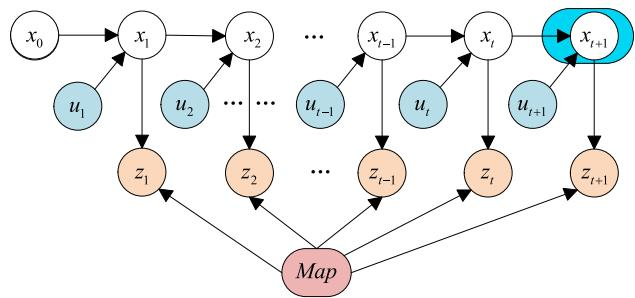
Fig. 1. An illustration of the localization process of the SLAM system. Only the marked with green background will be updated in the current step.
line and third line of Eq. (1), respectively. Let be the prior of the robot pose at time then it can be expressed as Eq. (2),
Note that, this derivation procedure also relies on Bayesian full probability rule and the Markov assumption. The Bayesian algorithm can be divided into two steps, i.e., the prediction step in Eq. (3) and the update or correlation step in Eq. (4):
In the prediction step, means estimating the state of the robot given the control vector and the state vector . In the update step, the estimated error from previous step will be corrected such that more accurate position and attitude information can be predicted for the robot. In summary, the key idea of Bayesian filter-based SLAM is to predict the most probable pose by combining the state transition equation in moving and the prediction equation in observation.
1) Kalman Filter: Gaussian filter-based and particle filtersbased approaches are widely used in SLAM. The Kalman Filter (KF) and the Extended Kalman Filter (EKF) are two typical applications of Gaussian filters [47]. The parameters can be defined as follows [46].
an n n matrix that describes how the state evolves from t 1 to t without controls or noise, where n is the dimension of the state vector
an n m matrix that describes how the control changes the state from t 1 to t, where m is the dimension of control vector
matrix that describes how to map the state to an observation , where k is the dimension of the measurement vector
two random variables representing the process and measurement noise that are assumed to be independent and multivariate normally distributed with covariance and , respectively.
the mean and covariance of state x at time t.
In addition to the Markov assumptions of the Bayes filter, Kalman filters rely on the assumptions that the state transition probability and the measurement probability must be linear function with added Gaussian noise, moreover, the initial belief must be normal distributed. So that the posterior probability could always obey Gaussian distribution [46].
The Kalman filter is illustrated by Eqs. (5)-(9), where the prediction of the robot pose is expressed by Eq. (5), and the uncertainty is expressed by the covariance matrix, as shown in Eq. (6). In other words, this corresponds to Eq. (2), which means the robot moves to a new position as estimated using Eqs. (5) and (6):
The optimal gain that minimizes the residual error , called Kalman Gain, is defined by Eq. (7),
Then the correlation of the robot pose can be expressed as
and the updated uncertainty is
These two operations together correspond to Eq. (4), which means the robot corrects the predicted pose by taking use of the measurement information of the environment.
The procedure of localization is illustrated by Fig. 1. At timestamp t 1, the next state under the action of control is predicted from the current state . However, this step will introduce error because the robot cannot be controlled perfectly as expected. As a result, the uncertainty of this procedure will be increased. While in the update procedure, the uncertainty of the predicted state can be decreased by combining the measurement information.
2) Extended Kalman Filters: As mentioned above, the premise of Kalman filter is that the process of state transition and measurement must be linear equation. However, they are non-linear in practice, it will lead to the unapplicable of Kalman filter. In order to solver this serious problem, Extended Kalman Filter is presented. As indicated by [46], the Extended Kalman filter assume that the state transition and measurement equation are all non-linear, and their definition can be expressed by Eq. (10) and Eq. (11),
where h and are the non-linear function. But unfortunately, owing to the The properties of gaussian distribution, the predict state and the measurement do not obey Gauss distribution any more. In other to make the posterior belief propagations be equivalent to the Kalman filter, EKF uses the first order Taylor Expansion to linearize the non-linear function g and h. In other words, the EKF uses this linear function to approximate the non-linear function. Consequently, EKF is able to propagate its belief and state as effectively as KF.
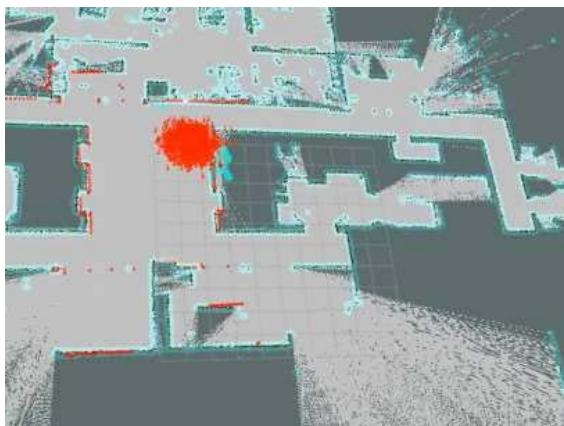
Fig. 2. An example of particle filter. The red area denotes the particle set which consists of a number of independent particles and each particle denotes a possible pose (with position and orientation) of the autonomous vehicle in the real world.
However, due to the fact that the non-linear state transition equation and prediction equation are all replaced by their own linear approximate function, the belief of the state estimated by EKF relies heavily on the consistency between the nonlinear function and its linear approximation function. The mean and covariance are different under the projection of a gaussian distribution through a non-linear function and its linear approximate function. In other words, the linear function cannot approximate the corresponding function, and it will lead to greater uncertainty of the state. What’s more, the greater the uncertainty, the worsen the estimated mean and covariance of the Gaussian function. As a result, the estimated pose will deviate further away from the real pose [46].
B. Particle Filter-Based Solution
Different from Kalman filters, the particle filter is an nonparametric filter. The posterior distribution of the estimated robot pose is represented by a set of particles rather than the multivariate Gaussian distribution. As shown in Fig. 2, all the particles represent the possible pose of the robot in the environment, and they are the instantiations of the posterior distribution. The parameters of a particle filter system are defined as follows [46]:
• M: the number of the particles, it is manually initialized for the particle filter algorithm,
m: an index value, satisfying
: the state of the mth particle at time t,
: the normalized weight of the mth particle at time t.
As shown in Algorithm 1, the particle filter system predicts the next state of every particle according to the control and calculates its weight ω according to the measurement zt acquired by exteroceptive sensors. Afterwards, the system will perform resampling or important sampling for the particles according to their weights. The algorithm runs in a recursive way. In each round of computation, some particles are assigned with low weights while some others are with high weights. For a particle, the heavier its weight, the larger possibility it will be sampled. All the sampled particles together will be used to calculate the position and orientation of the robot.
Algorithm 1 Particle Filtering
1: procedure PARTICLEFILTER
2: input:
3: all the particles’ states and weights at time t 1.
4: the control vector at time t.
5: the measurement at time t.
6: M: the total number of particles.
7: output:
8: the posterior states and weights at time t.
9: % Perform the prediction step:
10:
11: for (m 1 to M) do
12: % Predict the new state of particle m at time t:
13: predictNewState ;
14: % Calculate the weight of particle m:
15:
16: % Add the predicted particle to a priori set
17: AddToSet
18: end for
19: % Perform the resampling step:
20: for (i 1 to M) do
21: % Sample a particle from based on the weights:
22: drawParticle
23: % Add the sampled particle into
24:
25: end for
26: end procedure
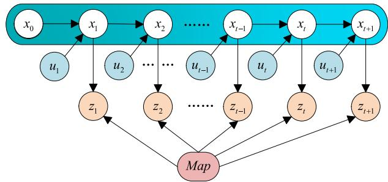
Fig. 3. An illustration of full SLAM. All x0 to marked with blue background will be updated in the current step.
The particle filter is popularly used to construct SLAM system. However, it has several drawbacks. First, it suffers from the particle-depletion problem, i.e., the particles with low weights will be gradually eliminated during the resampling step, which leads to a too low diversity of the particles to accurately estimate the pose of the robot. Second, the resampling step can potentially eliminate the correct particles [48]. Third, due to the fact that a particle is an assumption of the robot’s pose in the environment, it usually requires hundreds or thousands of particles to fully estimate the robot’s pose, which may bring a heavy computation load.
C. Graph Optimization-Based Solution
The main idea of the graph optimization in the SLAM is to estimate all the states over the entire path and the map, rather than the current pose . It takes all the measurement and control values in a range of time duration into account and makes a global optimization estimation for all the poses. The graph optimization-based SLAM aims at addressing the full SLAM problem which is illustrated in Fig. 3. When it calculates the state , all the available measurements and controls between and will be taken into account. It means that the current measurements may have an influence on the pose estimation at previous time.
The principle of graph optimization is illustrated in Fig. 4. All the constraints in the graph are calculated as residual errors. Then, the sum of the residual errors, , can be formulated by
where is an anchoring constraint that anchors the robot’s initial pose to in the map as detailed in [49], is a nonlinear state transition function that transits the state to , and is a nonlinear measurement function that maps the robot’s observation values at state into the map. can be minimized by nonlinear optimal methods such as Gaussian-Newton algorithm and Levenberg-Marquard algorithm.
From the description above, we can find that the main difference between graph optimization-based SLAM and Filterbased SLAM is that the former estimates the global-optimal poses and the current measurements will affect the pose estimation in the previous timestamps, while the latter only estimates the pose that is optimal at the current time.
D. Summary
The three strategies mentioned above present different ideas to solve the SLAM problem. Gaussian filter-based strategy assumes that the estimated state of the robot obeys the multivariate Gaussian distribution. The Gaussian filter uses several specific parameters, , mean and covariance mentioned in Section II-A.1, to represent the robot’s state, and updates the parameters to predict the new state.
The particle filter-based strategy uses a set of particles to estimate the pose of the robot. Each particle represents a possible state of the robot in the real world. Similar to Gaussian filter, the particle filter-based strategy calculates the current state of the robot based on the previous state recursively. The recursive estimation of the robot state follows the basic idea of the Bayesian filter.
Unlike the above two, the graph optimization-based strategy models the localization and mapping process into a pose graph, where the nodes represent the estimated state of the robot, and the edges represent the association of the nodes. It is worth noting that, Gaussian filter and graph optimization are widely used in both LiDAR SLAM and visual SLAM, while particle filter is usually only used in LiDAR SLAM.
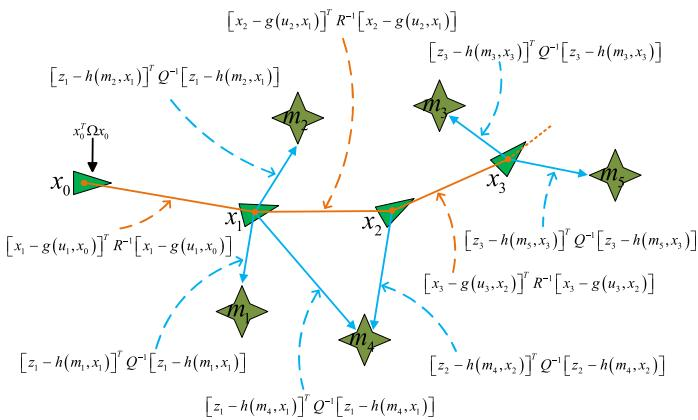
Fig. 4. An overview of the graph optimization-based SLAM algorithm. The triangles represent the poses of the robot, and the stars represent the landmarks that the robot observes. The triangles and stars are set as nodes in the graph. The solid lines are set as edges in the graph which place constraints on the SLAM system. Note that, the blue solid line denotes the measurement and the orange solid line denotes the control.
III. LIDAR SLAM TECHNIQUES
The three strategies introduced in Section II are the basic ideas for estimating the current state of the robot. They can be implemented in various ways, which leads to different SLAM Methods. In this section, we briefly introduce seven representative LiDAR-based SLAM methods or solutions, i.e., the Gampping, CoreSLAM, KartoSLAM, HectorSLAM, LagoSLAM, LOAM and Cartographer. These solutions run on the Robot Operating System (ROS). Table I summarizes the characteristics of the various methods.
A. Gmapping
Gmapping [33] constructs the SLAM on the basis of Rao-Blackwellized particle filters (RBPF) [53], it has attracted wide attention since its invention. RBPF is a particle filterbased solution. Each particle represents a possible pose of the robot in the real world, and carries the individual map of the environment. In order to accurately present the real pose, RBPF needs a large number of particles, which will consume a lot of computer resources. While for Gmapping, it drastically reduces the number of the necessary particles by employing an adaptive sampling strategy. It decides whether to do the resampling by using a threshold which is defined by Eq. (13),
where M is the total number of particles, and is the normalized weight of particle . The value determines the degree of dispersion of the particle set. A greater will make a more concentrated particle set, which would produce an estimated pose more closer to the ground truth. On the contrary, a smaller will lead to a larger error of the pose estimation. When is smaller than the resampling step be carried out [54]. Meanwhile, It takes the most recent observation into account, which greatly improves the accuracy of the proposal distribution. As a result, the uncertainty of the predicted pose will be drastically decreased.
TABLE I
COMPARISON OF DIFFERENT LIDAR SLAMS. NOTE THAT, THE ALGORITHMS ARE CLASSIFIED INTO EKF, PF, EM AND GRAPH
| Method | OpenSource | 3DPose | LoopClosure | RealTime | fuse IMUor Visual | Algorithm | MapType | MatchingMethod | LocalizationPerformance | CPULoad |
| Gmapping [33] | PF | Grid Map | Scan-to-Map | Good | High | |||||
| CoreSLAM [34] | PF | Grid Map | Scan-to-Map | Poor | Low | |||||
| KartoSLAM [50] | Graph | Grid Map | Scan-to-Scan &Scan-to-Map | Good | Low | |||||
| LagoSLAM [31] | Graph | Grid Map | Scan-to-Scan | Medium | Medium | |||||
| HectorSLAM [30] | IMU | EKF | Grid Map | Scan-to-Scan | Good | Low | ||||
| LOAM [51] | IMU | PointcloudMap | Scan-to-Scan &Scan-to-Map | Excellent | Medium | |||||
| V-LOAM [52] | Visual | PointcloudMap | Scan-to-Scan &Scan-to-Map | Excellent | ||||||
| Cartographer [39] | IMU | Graph | Grid Map | Scan-to-Map | Good | High | ||||
| IMLS-SLAM [41] | PointcloudMap | Scan-to-Scan &Scan-to-Map | Excellent | |||||||
| CPFG-SLAM [36] | EM | Grid Map | Scan-to-Map | Good | ||||||
| LIMO-SLAM [44] | Visual | PointcloudMap | Good | |||||||
| STEAM-L [45] | PointcloudMap | Scan-to-Scan | Good | |||||||
| SuMa [35] | Graph | PointcloudMap | Scan-to-Map | Medium |
B. CoreSLAM
CoreSLAM [34] is a brief SLAM algorithm that has only 200 lines of C code. It aims to develop a code friendly, efficient, comprehensible and high-precision SLAM algorithm which can be easily integrated into the existing particle localization framework. It uses an affordable Hokuyo URG04 laser scanner – a short range laser with 10Hz update frequency. The CoreSLAM algorithm consists of two main functions, namely the scan-to-map distance function and the map-update function. The former converts the physical distance obtained by laser to the pixel distance in occupied map. While the latter updates the map with the robot’s moving. CoreSLAM introduces a concept of latency, which is the time between the laser scan and its integration into the map, and is formulated by Eq. (14),
where represents the resolution of the map, is the frequency of the laser, is the speed of the autonomous vehicle. The latency contributes to measure small displacements relative to the map resolution.
The author tested it in the indoor environment and drew the conclusion that, CoreSLAM method had a good performance and it could handle the loop closure. However, [55] evaluated it on ROS and got the evaluation results showing that CoreS-LAM was not as good as expected and did not achieve the loop closure effect.
C. KartoSLAM
KartoSLAM [50] is a graph optimization-based SLAM method. For graph optimization-based SLAM, the nodes represent the landmarks and the robot’s pose in the real world, the edges represent the constraint raised by the spatial distance between the poses and landmarks in the real world. KartoSLAM proposed an efficient approach named Sparse Pose Adjustment (SPA) to solve the large pose graphs optimization problem. It first computes the sparse matrix from the constraint graph, and then uses sparse non-iterative Cholesky decomposition technique to solve the linear system. The observation errors can be formulated by Eq. (15),
where and are the translation and orientation parameter of the robot pose in the world frame, respectively, is the rotation matrix, is the measured offset between node i and node is the error function, and is the total error of all edges in the pose graph. We can see, is a nonlinear function and nonlinear optimization methods are used to solve it. In KartoSLAM, the highly-optimized Cholesky decomposition solver is adopted to solve this nonlinear system.
Compared with the general graph optimization-based method, KartoSLAM has the advantages of getting more accurate solutions, being robust and tolerant to initialization, converging very fast and being fully non-linear, etc [50].
D. LagoSLAM
LagoSLAM [31] is also a graph optimization-based SLAM approach. It introduces a closed-form approximation to the full SLAM problem from the perspective of linear estimation. LagoSLAM needs no initial guess during linear approximation process. In addition, the results are accurate enough and need no refinement by using nonlinear optimal techniques.
Graph optimization-based SLAM aims at minimizing the sum of the residual errors as shown in Eq. (15). LagoSLAM solves this nonlinear problem by decoupling the the orientation and position estimation under the assumption that the relative position information and the relative orientation information are independent. Under this assumption, Eq. (15) can be simplified as
where and are two reduced incidence matrices, θ and are the orientation and position that we need to solve, is the relative orientation measurements, is relative position measurements. Afterwards, the linear estimation for orientation and position can be solved.
LagoSLAM applies the linear estimation and graph theory for retrieving the approximate solution of the robot pose. However, as a graph optimization-based SLAM algorithm, it takes up higher CPU load and has a relative lower mapping accuracy than KartoSLAM according to the examination results in [55].
E. HectorSLAM
Compared with [31], [33], [34], [50], HectorSLAM [30] is a unique SLAM system which can be appiled to unmanned aerial vehicle (UAV), but the structure of HectorSLAM System is more complicated. And in order to obtain better localization results, it has to install a 3D inertial sensing system and a modern LiDAR with high update rate and low measurement noise. Moreover, these two systems must be synchronized by hard real-time controller. Different from the general systems, HectorSLAM has only the frontend system and does not provide pose graph optimization in the backend.
HectorSLAM can be divided into 2D SLAM sub system and 3D navigation sub system. For the 2D SLAM subsystem, scan matching that aligns the laser scans with each other or with the existing map is a key technique. It aims at finding the proper orientation and translation parameter so that the laser beam endpoints and the constructed map can be matched. This procedure is formulated by Eq. (17),
where ti , represent the translation and orientation of the pose in the 2D world coordinate at time i , respectively, M(t, θ) transforms the pose in world coordinate to the occupied grid maps, and is the sum of the residual errors.
For the 3D navigation sub system, it can be divided into navigation filter and SLAM integration. As to navigation system, EKF technique is used to estimate the velocity and position with IMU. While in the SLAM integration system, the 3D estimation obtained by EKF will be projected to the 2D system to improve the scan-matching performance.
F. LOAM
LOAM [51] proposed a real-time SLAM solution, which solves the odometry and mapping with two independent algorithms. The localization algorithm performs odometry with low accuracy at a high frequency, while the mapping algorithm builds the accurate map at a low frequency. From the hardware point of view, it combines the 3D IMU sensor and the LiDAR sensor to estimate the pose and the map. And its experiment shows that, it obtains relatively high performance in localization, and can get much higher accuracy in localization with the assistance of IMU. A working scene of LOAM is shown in Fig. 5.
V-LOAM [52] is an improved version of LOAM, which presents a general framework to combine visual and LiDAR information, and achieves a better localization result than LOAM. For V-LOAM, the visual odometry performs the motion estimation at a high frequency of 60Hz (image frame rate), while the LiDAR odometry plays the role of refining motion estimation, removing distortion and correcting drift at a low frequency of . In this way, the system is able to adapt to the environments of fast moving and ambient lighting changes. As a result, it achieves a better performance than the LiDAR-only or visual-only algorithms and ranks first on the KITTI benchmark, with a drift error of 0.55% when combining visual and LiDAR odometry.
G. Cartographer
Cartographer [39] is a SLAM solution proposed by Google. It supports multiple platforms such as backpack, UAV and AGV. It adapts to different sensor configurations and achieves real-time mapping and loop closure at a resolution of 5cm. In Cartographer, the branch-and-bound algorithm is used to reduce the computational loads of the robot pose estimation and loop closure detection. For the local 2D SLAM, the Ceres matcher [56] is used to find a scan pose that optimally matches the corresponding sub map. Finally, the pose estimation is formulated as the widely accepted nonlinear least squares problem, as defined by Eq. (18),
where and denote the translation and orientation, respectively, which are relative to the sub map frame rather than to the global world frame. smooths the probability values in the local sub map.
In order to eliminate the accumulative error generated during the matching of scan and submap, the loop-closure mechanism is employed which utilizes the Sparse Pose Adjustment algorithm [50] to adjust the pose of all the submaps and scans. The loop-closure constraints can be formulated as a nonlinear least squares problem, as mentioned in Eq. (12), where the branch-and-bound scan matching techniques and Ceres solver can be used to retrieve the optimal solution.
IV. EXPERIMENTS AND DISCUSSIONS
In this section, extensive evaluations are performed for various LiDAR SLAM methods in the indoor environments.
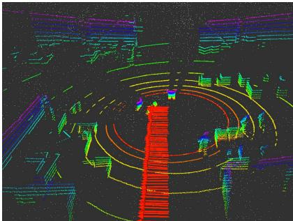
Fig. 5. The point cloud map generated by LOAM Algorithm. Each white point is a feature point extracted by the relative feature point extraction algorithm, and the colored lines are the place where LiDAR scans hit the objects at current time.
All the data used in the experiments are collected by our autonomous vehicles. Three representative LiDAR-based SLAM solutions, i.e., Gmapping, Cartographer and LOAM, are evaluated in this experiments. These three solutions are selected because they are widely used in practical engineering applications. Meanwhile, a method using wheel encoder in the robot motion model named Wheel Odometry and a particle filter-based method named AMCL are also included in the experiments. In order to make convincible evaluations and fair comparisons, we conduct the experiments by using three different robots, moving in regular and irregular trajectories, and performing multiple times.
A. System Configuration
For the configuration of the LiDAR SLAM system, the hardware system is equipped with a 2.5GHz CPU and a 6GB RAM, and the software system installs the Ubuntu v14.04 and the Robot Operating System (ROS) in indigo version. GPU is not used for parallel computing. With regarding to the sensors, a 16-line Velodyne LiDAR and an IMU380ZA-200 IMU sensor are used.
The 16-line Velodyne LiDAR has the measurement range: 100 meters, with a precision of 3cm; the vertical filed of view: 15.0◦ to 15.0◦, with an angular resolution of 2.0◦; the horizonal field of view: 360◦, with an angular resolution of ; the rotation rate: 5Hz 20Hz. We set the angular resolution of the horizontal view as 0.4◦, and the rotation rate as 10Hz. The IMU380ZA-200 IMU, can generate the acceleration and angular velocity information, and the sampling rate is set as 200Hz. As the IMU in use has a relative high measurement accuracy, and each experiment does not last long, we can ignore the IMU bias in the following experiments. For the wheel odometry, each wheel is equipped with an encoder to monitor its rotate speed, which functions at a frequency of 30Hz.
The localization performance of the mainstream Lidar-based SLAM methods are evaluated, which are all implemented on the ROS system.
In the experiment, the robot is remotely controlled by a handle to move in specific trajectories. We record all the sensor data with the ROS command ‘rosbag record -a’ when the robot is running as planned. After that, we run different SLAM methods offline on these collected data. In this way, we can obtain the localization results of various methods and make comparisons. There are three main experiments.
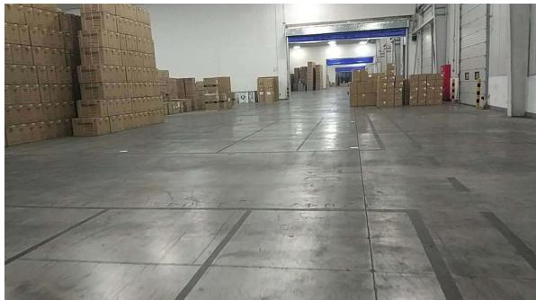
Fig. 6. The warehouse environment of Experiment I and Experiment III. The experimental region is about 100m 60m.
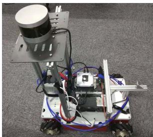
(a)
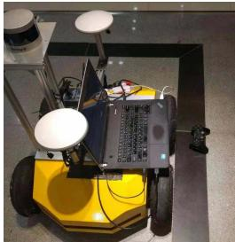
(b)
Fig. 7. Autonomous vehicles used in our experiments. (a) An autonomous vehicle equipped with McLam wheel and Velodyne LiDAR. (b) An autonomous vehicle equipped with differential wheel and Velodyne LiDAR. The GPS block is not used in the experiments.
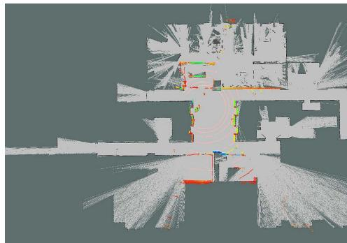
Fig. 8. The occupied grid map generated by Gmapping Algorithm. The gray area contains a number of small gray squares or pixels, and one square of pixel represents a small specific area that can be set manually before it was built in real world.
In Experiment I, we use a robot equipped with McLam wheels to collect data in an ordinary indoor environment. The angular and positioning estimations are conducted by several popular LiDAR-based methods on the collected data. Figure 6 shows a scene of the experiment site. It is in a warehouse full of goods. The region is large enough to support our test.
In Experiment II, the experiment data is collected on a challenging corridor environment with glass by an autonomous vehicle also equipped with McLam wheels, as shown in Fig. 7(a). In order to make it easy to measure the ground truth of the moving trajectories manually, we drive the robot moves in paths of L shape and rectangle shape. Figure 8 shows the occupancied grid map of the experiment site. In this figure, the two long corridors are built with glass walls, and the rectangle area in the center of the figure is the main site for our experiment. Figure 12 and 13 show the movement trajectories of our vehicle at the main site.
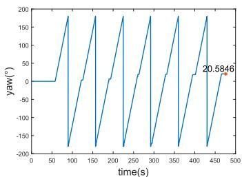
Wheel Odometry
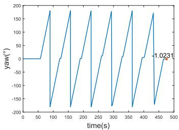
EKF
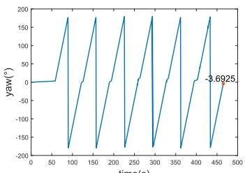
AMCL
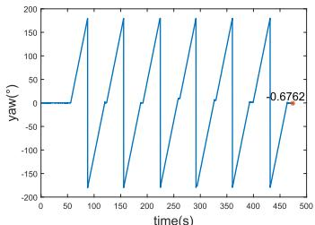
LOAM
Fig. 9. Orientation estimation results obtained by four different methods. The autonomous vehicle has been driven to rotate itself six rounds in situ.
In Experiment III, the experiment is also conducted in the warehouse as shown in Fig. 6. It aims to evaluate the performance of localization and mapping in large-scale scenarios with relatively high movement speeds [57]. An autonomous vehicle equipped with differential wheels is used, as shown in Fig. 7(b). Different from Experiment I, the vehicle in this experiment moves on a long corridor with goods on both sides.
B. Experiment I
In this experiment, we first evaluate the orientation accuracy, and then examine the localization error with different trajectories, in regular and irregular shapes, and finally evaluate the performance of Cartographer with and without IMU and wheel odometry.
1) Orientation Accuracy: Two experiments are conducted. In the first one, we manually control the robot and rotate it n rounds around itself in situ, then we run the different SLAM methods and get the estimated orientations, which are then compared with the ground-truth value Figure 9 shows the estimated orientation values of different methods, and Table II gives the estimation errors. From Fig. 9 and Table II we can see, the orientation error of ‘Wheel Odometry’ is 20.585◦, which is much higher than the other three methods. Exactly, with the help of IMU, the estimated errors are reduced by an order of magnitude. Both EKF (IMU and Wheel Odometry) and LOAM (LiDAR) show excellent performance in rotation estimation, which hold an error rate lower than 0.05%.
In the second experiment, the autonomous vehicle moves randomly and goes back to the starting point, where the trajectory is a closed loop. We perform the dead-reckoning algorithm to infer the trajectory, under two different settings: ‘Wheel Odometry’ and ‘Wheel Odometry IMU’. For the later case, we use the Extended Kalman Filter (EKF) to fuse the wheel odometry and IMU information, and name it as ‘EKF’. Figure 10 displays the trajectories obtained by the two methods. The end points are expected to be overlap with the starting point. It can be seen from Fig. 10, the end point of
TABLE II
ORIENTATION ERRORS OF DIFFERENT SLAM METHODS
| Method | Ground Truth | Error (degree) | Error Rate |
| Wheel Odometry | 6×360° | 20.585 | 0.952% |
| EKF | 6×360° | -1.023 | 0.047% |
| LOAM | 6×360° | -0.676 | 0.031% |
| AMCL | 6×360° | -3.693 | 0.171% |
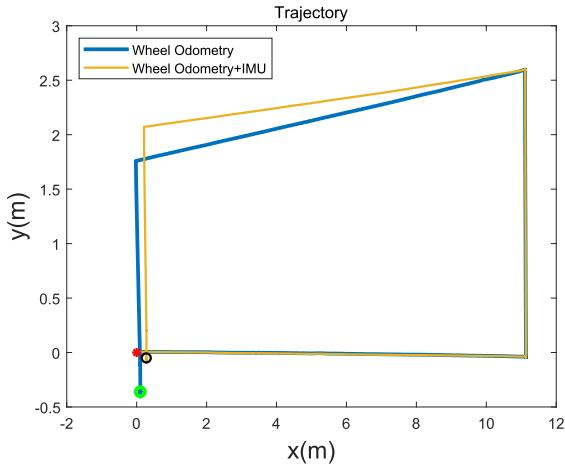
Fig. 10. The trajectories produced by ‘Wheel Odometry’ (in blue) and the EKF (in yellow). The red circle denotes the starting point, and the black and green circles indicate the end points.
EKF is much closer than that of ‘Wheel Odometry’. It simply indicates that IMU plays an important role in improving the localization for the autonomous vehicle. To this end, the result of wheel odometry will not be compared in the following experiments due to its poor localization accuracy. Alternatively, the fusion result of wheel odometry and IMU will be compared and discussed in the subsequent experiments.
2) Localization Accuracy on Regular-Shape Trajectories: This experiment is performed in a warehouse. Figure 11 illustrates the test field the experiment. The gray block denotes the concrete ground, and the black line denotes the gap between the blocks. We mark seven points on the ground. According to the measurement, 5.003m, . While and are not strictly in a line, the direct distance from to is 18.007m. We drive the robot to move in three paths with different shapes, namely the straight line shape, L shape and rectangle shape, each with three times. The straight line is . The L shape is . The rectangle shape is
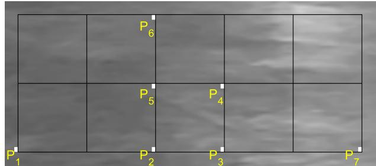
Fig. 11. An illustration to the test field. Seven points are marked on the ground, where P P 11.985m, , and . The autonomous vehicle is controlled to move in several pre-defined paths, and then different SLAM methods are employed to compute the trajectories.
TABLE III
LOCALIZATION ERRORS OF DIFFERENT METHODS ON STRAIGHT LINETRAJECTORY. THE GROUND-TRUTH END POINT IS AT (18.007, 0)
| Trajectory | Ending Point | Error (m) | Ave. Error Rate |
| EKF | (18.036, -0.052) (18.043, -0.054) | 0.030 0.036 | 0.210% |
| LOAM | (18.054, -0.082) | 0.047 | |
| (18.026, -0.126) | 0.020 0.024 | 0.159% | |
| (18.031, -0.083) | |||
| (18.049, -0.106) (18.015, -0.153) | 0.043 0.009 | 0.077% | |
| Gmapping | (18.022, -0.154) | 0.018 | |
| (18.024, -0.139) | 0.018 | ||
| Cartographer | (17.994, -0.202) | -0.012 | |
| (17.995, -0.213) | -0.011 | 0.034% | |
| AMCL | (18.007, -0.171) (18.340, -0.144) | 0.001 0.334 | 1.566% |
| (18.052, -0.176) | |||
| 0.046 | |||
| (18.473, -0.073) | 0.467 |
When we set the starting point as the coordinate origin of the localization system, we cannot ensure that the coordinate system will align completely during the repeated moving tests. This is because, the autonomous vehicle is manually controlled and will stop at the starting point with some random errors. As a result, the trajectories acquired in the repeated tests will not exactly overlap with each other when they are projected to their own coordinate system. Consequently, it is inappropriate to evaluate the error on the pose at each timestamp, as the protocol used in [58], [59], with Eq. (19),
where denotes the information matrix of the pose and T denotes the total time.
As the move of the autonomous vehicle is manually controlled, we cannot get the accurate poses during its movement. Moreover, the several SLAM methods output the localization results in different frequencies. As a result, it is hard to compare the localization error on the whole trajectory. Instead, the squared error is more suitable for our case, while we only consider the localization error. We define σ as the error between the estimated position and the ground-truth position,
TABLE IV
LOCALIZATION ERRORS OF DIFFERENT METHODS ON L-SHAPE TRAJEC-TORY. THE GROUND-TRUTH END POINT IS AT (11.985, 5.003)
| Trajecory | Ending Point | Error (m) | Ave. Error Rate |
| EKF | (12.070, 4.869)(11.944, 4.856) | 0.1580.153 | 0.920% |
| LOAM | (12.089, 4.980)(12.078, 4.998) | 0.0630.055 | 0.590% |
| Gmapping | (12.058, 4.907)(12.039, 4.939) | 0.1210.084 | 0.600% |
| Cartographer | (12.058, 4.904)(12.009, 4.914) | 0.1240.092 | 0.600% |
| AMCL | (12.065, 4.936)(12.334, 4.851) | 0.1040.381 | 1.430% |
as formulated by Eq. (20),
where denotes the ground-truth position, and is the estimated position in the i th test. As the error would aggregate when the length of the trajectory increases, we introduce the average error rate as a metric, which is defined as
where is the average error and is total length of the path. The localization results obtained by different methods on the straight line, L shape and rectangle shape are shown in Tables III, IV and V, perspectively.
It can be observed from Tables III - V that, LOAM, Gmapping and Cartographer have very good performance in localization on regular shaped trajectories. The average error rate of them are lower than 1.00%. In the case of straight line, Cartographer obtains the lowest error rate of 0.034%, which is slightly lower than Gmapping’s 0.077%. In the case of L shape, LOAM obtains the lowest error rate, which is 0.590%. The AMCL shows a poor performance in localization in these regular shaped trajectories. One possible reason is that, AMCL needs a pre-constructed map of the environment to compute the pose of the autonomous vehicle. The localization accuracy is highly dependant on the precision of the map. In our experiments, we construct the map by Cartographer. As a result, AMCL has a lower accuracy than Cartographer.
3) Localization Accuracy on Irregular-Shape Trajectories: In this experiment, the autonomous vehicle is remotely controlled to move in random directions which produces an irregular trajectory. The test is repeated for three times. Note that, the robot will stop at its starting point in the end of each test. The experimental results are shown in Table VI. It can be seen from Table VI, the average errors obtained by LOAM, Cartographer and Gmapping are an order of magnitude smaller than that of EKF and AMCL. In previous subsection, we have discussed the reason of AMCL’s lower localization accuracy. Regarding to EKF, we can find that, its localization accuracy is close to that of LOAM, Gmapping and Cartographer on the regular shaped trajectories, however is much lower on irregular shaped trajectories. According to the regular and irregular positioning experiment results, the Gmapping shows a higher localization performance than the LOAM method in a smallscale field with a low moving speed. It simply indicates that, when it takes no turns, the EKF can work as well as LOAM, Gmapping and Cartographer – three methods fusing LiDAR information in their localization. Note that, we do not turn the vehicle at the corner, owing to the flexibility of McLam wheel.
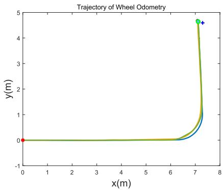
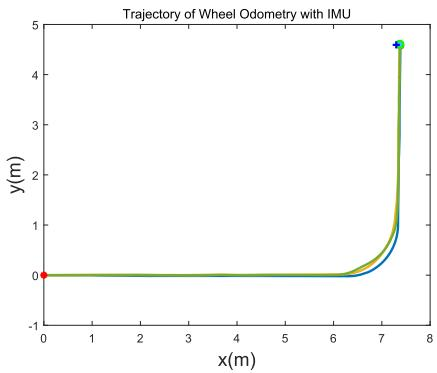
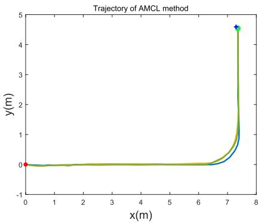
Fig. 12. Trajectories computed by different methods for the L-shape path run by the second autonomous vehicle. The blue ‘ ’ denotes the ground-truth end point. The localization errors are given in Table VIII.
TABLE V
THE POSITIONING ERROR OF DIFFERENT METHODS ON RECTANGLE TRA-JECTORY. THE GROUND-TRUTH END POINT IS AT (0, 0)
| Trajectory | Ending Point | Error (m) | Ave. Error Rate |
| EKF | (-0.004, 0.006) (0.047, 0.016) | 0.008 0.050 | 0.207% |
| LOAM | (-0.030, 0.074) | 0.080 | |
| (0.045, 0.024) (0.012, 0.042) | 0.051 0.044 | ||
| (0.006, 0.050) | 0.051 | 0.090% | |
| (0.018, 0.009) | 0.020 | ||
| Gmapping | (-0.010, 0.018) | 0.021 | |
| (0.002, 0.019) | 0.019 | ||
| Cartographer | (0.014, 0.002) | 0.016 | 0.136% |
| (0.013, 0.019) (0.003, 0.033) | 0.030 0.045 | ||
| AMCL | (0.010,-0.010) | 0.015 | 0.634% |
| (0.414, 0.000) | 0.104 | ||
| (0.294,-0.067) | 0.301 |
TABLE VI
LOCALIZATION ERRORS OF DIFFERENT METHODS ON IRREGULAR SHAPE TRAJECTORY. THE GROUND-TRUTH END POINT IS AT (0, 0)
| Trajectory | Ending Point | Error (m) | Ave. Error Rate |
| EKF | (0.274,-0.050) | 0.279 | 0.770% |
| (-0.015, 0.334) (-0.006, 0.032) | 0.334 0.032 | ||
| LOAM | 0.073 | 0.300% | |
| (0.025, 0.068) | 0.090 | ||
| (0.042, 0.080) (0.005, 0.018) | 0.051 | ||
| Gmapping | (-0.004, 0.001) | 0.004 | 0.080% |
| (0.008,-0.015) | 0.017 | ||
| (-0.016,-0.016) | 0.023 | ||
| Cartographer | (-0.017,-0.011) | 0.004 | 0.190% |
| (-0.050, 0.049) | 0.062 | ||
| (-0.041, 0.019) | 0.052 | ||
| AMCL | (0.167,-0.088) | 0.189 | 0.890% |
| (0.281, 0.227) | 0.361 | ||
| (0.035,-0.115) | 0.121 |
4) Localization Accuracy of Cartographer With and Without IMU/Odometry: Cartographer can use LiDAR information for the localization. In this experiment, we evaluate the performance of Cartographer with three different settings, i.e., ‘LiDAR’, ‘LiDAR IMU’ and Wheel_Odometry’. We use the collected data in Section IV-B.2 and IV-B.3 to do the evaluations. Table VII shows the localization results in different trajectories obtained by different Cartographer configurations. The results demonstrate that, moving within a small area, there is no obvious difference among various Cartographer configurations, i.e., using LiDAR sensor with or without IMU or wheel odometry. And it indicates that the localization performance of Cartographer is pretty good in an area smaller than one hundred square meters.
C. Experiments II
This experiment is performed by using another McLam wheel autonomous vehicle, as shown in Fig. 7(a). The test field is in a building. The layout of the field is shown in Fig. 8, and the filed size is about 10m 10m. From Fig. 8, it can be found that there are long corridors in the test field. The doors and corridors are made of glass. It is an ideal experiment field to evaluate the performance of the LiDAR SLAM algorithms in challenging scenarios with glass and long corridor.
The robot is equipped with the wheel encoder, IMU and LiDAR sensor. Note that, the IMU and the LiDAR sensors are the same as in Experiment I. The test is performed in the L-shape trajectory and rectangle-shape trajectory, with each case repeatedly for three times. Different from Experiment I, the vehicle here turns at the corner of L-shape path. Figure 12 and Figure 13 show the trajectories estimated by Wheel Odometry, EKF and AMCL methods, in L shape and rectangle shape, respectively. The localization errors and the average error rates are given in Table VIII.
From Fig. 12 and Fig. 13 we can find that, EKF and AMCL achieve much better localization accuracy than Wheel Odometry. From Table VIII we can find, the localization errors of AMCL and EKF are 0.656% and 0.681%, which are very close. While in rectangle shape, AMCL’s localization error is about 0.5% higher than EKF. One potential reason is that, the map used by AMCL is not accurate enough.
Trajecory of LOAM and Cartographer with different speed
TABLE VII
LOCALIZATION RESULTS OBTAINED BY CARTOGRAPHER USING LIDAR WITH AND WITHOUT IMU OR ODOMETRY
| Trajectory Type | End Point | Ground Truth | Error (m) | ||||
| LiDAR | LiDAR (+IMU) | LiDAR | End Point LiDAR | LiDAR | LiDAR (+IMU+Wheel) | ||
| Line | (18.009,-0.207) | (17.990,-0.198) | (+IMU+Wheel) (18.008,-0.195) | 0.003 | (+IMU) -0.016 | 0.002 | |
| (18.023,-0.204) | (18.007, -0.194) | (18.021,-0.216) | (18.007, 0.000) | 0.018 | 0.001 | 0.016 | |
| (18.006,-0.210) | (18.001,-0.188) | (18.025,-0.148) | 0.000 | -0.005 | 0.019 | ||
| L Shape | |||||||
| (12.064, 4.878) | (12.054, 4.892) | (12.058, 4.904) | (11.985, 5.003) | 0.148 | 0.131 | 0.124 | |
| (12.041, 4.891) | (12.037, 4.909) | (12.009, 4.914) | 0.126 | 0.108 | 0.092 | ||
| Rect. | (0.011, 0.007) | (0.022, 0.021) | (0.000, 0.016) | 0.013 | 0.031 | 0.016 | |
| (-0.007, 0.014) | (0.015, 0.028) | (0.006, 0.029) | (0.000, 0.000) | 0.015 | 0.032 | 0.030 | |
| (-0.025, 0.011) | (-0.020, 0.032) | (-0.008, 0.040) | 0.027 | 0.037 | 0.041 | ||
| Random | (-0.004,-0.010) | (-0.012,-0.007) | (-0.004, 0.000) | 0.011 | 0.014 | 0.004 | |
| (-0.027,-0.034) | (-0.029,-0.011) | (-0.046, 0.042) | (0.000, 0.000) | 0.044 | 0.031 | 0.062 | |
| (-0.020,-0.042) | (-0.040,-0.035) | (-0.021, 0.048) | 0.047 | 0.054 | 0.052 | ||
TABLE VIII
LOCALIZATION ERRORS OF WHEEL ODOMETRY, EKF AND AMCL METHODS, USING THE SECOND AUTONOMOUS VEHICLE
| Trajectory Type | Starting Point | Ending Point | Error (m) | Ave. Error Rate | ||||||
| Wheel Odometry | EKF | AMCL | Wheel Odometry | EKF | AMCL | Wheel Odometry | EKF | AMCL | ||
| L Shape | (0.0,0.0) | (7.126,4.638) | (7.392,4.574) | (7.362,4.558) | 0.178 | 0.096 | 0.072 | |||
| (7.090,4.676) | (7.368,4.608) | (7.356,4.533) | 0.224 | 0.072 | 0.084 | 1.654% | 0.681% | 0.656% | ||
| (7.115,4.640) | (7.272,4.603) | (7.358,4.544) | 0.189 | 0.075 | 0.078 | |||||
| Rectangle | (0.0,0.0) | (-0.088,-0.114) | (-0.019,0.042) | (-0.034,0.142) | 0.144 | 0.046 | 0.146 | |||
| (-0.094,-0.093) | (0.003,0.062) | (-0.029,0.120) | 0.132 | 0.063 | 0.123 | 1.080% | 0.370% | 0.860% | ||
| (-0.167,-0.151) | (-0.039,0.050) | (-0.020,0.129) | 0.225 | 0.064 | 0.130 | |||||
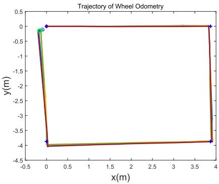
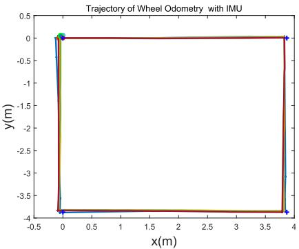
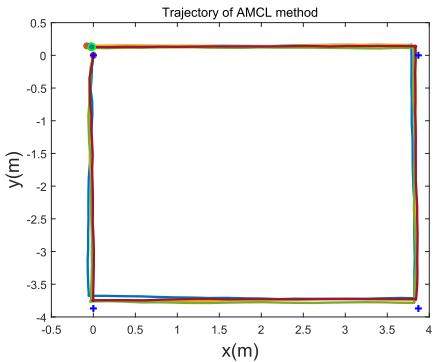
Fig. 13. Trajectories computed by different methods for the rectangle-shape path run by the second autonomous vehicle. The blue ‘ ’ denotes the ground-truth corner point. The localization errors are given in Table VIII.
TABLE IX
EVALUATION OF LOAM’S AND CARTOGRAPHER’S LOCALIZATION ERROR WITH STRAIGHT-LINE PATH AT DIFFERENT MOVING SPEEDS. THE GROUND-TRUTH LENGTH OF THE PATH IS 84.932M
| Traj. No. | Calc. Distance (m) | Error (m) | Error Rate | |||
| LOAM | Carto. | LOAM | Carto. | LOAM | Carto. | |
| 01 | 84.981 | 85.043 | 0.048 | 0.111 | 0.057% | 0.131% |
| 02 | 85.030 | 85.085 | 0.098 | 0.153 | 0.115% | 0.181% |
| 03 | 84.956 | 56.606 | 0.024 | 28.326 | 0.028% | 33.351% |
| 04 | 84.965 | 70.223 | 0.033 | 14.709 | 0.039% | 17.319% |
D. Experiment III
This experiment is performed by the third autonomous vehicle, as shown in Fig. 7(b). The experimental task is to evaluate the localization accuracy of LOAM and Cartographer in a large-scale indoor test filed, which is about 100m 40m. The robot is equipped with the same 16-line velodyne LiDAR sensor as used in Experiment I and II. In this experiment, we compare the performance of LOAM and Cartographer by driving the robot to move in a straight line with a low speed and a high speed. Each speed is tested twice. The trajectories generated by LOAM and Cartographer are shown in Fig. 14.
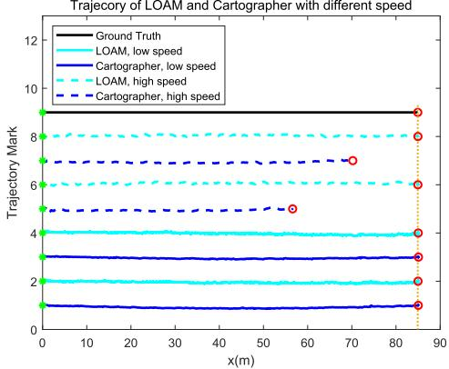
Fig. 14. Trajectories at different moving speeds computed by LOAM and Cartographer. The trajectories produced by LOAM and Cartographer are marked in cyan and blue, respectively. The horizontal axis is the length of the trajectory and the vertical value specifies the trajectory index with respect to different methods and varied speeds. The ground-truth length of the path is 84.932m. The low speed is about 0.2 m/s and the high speed is about 0.8 m/s.
In Fig. 14, the black line denotes the ground-truth trajectory, which has a length of 84.932m. The high speed is denoted with dash lines, while the low speed is denoted with solid lines. The results of Cartographer and LOAM are marked in blue and cyan, respectively. Table IX shows the localization errors of the two methods.
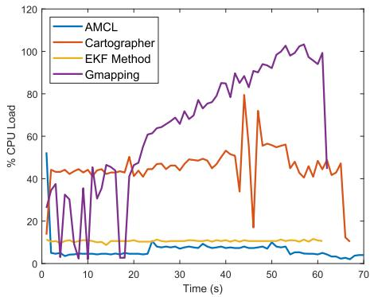
(a)
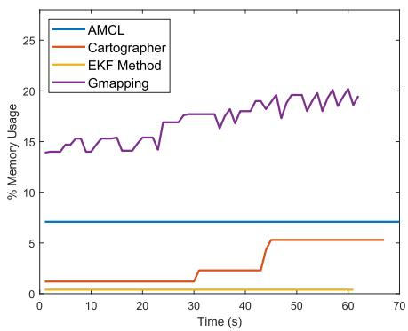
(b)
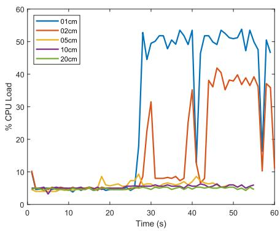
(c)
Fig. 15. Running efficiency. (a) and (b) show the CPU load and memory usage when running different SLAM methods on the same dataset. (c) shows the CPU load when running AMCL on different minimal update distances.
It can be seen from Fig. 14, in the low speed, both LOAM and Cartographer perform well, while in the high speed, LOAM has a higher performance than Cartographer. According to Table IX, in the low speed, the localization error of LOAM and Cartographer is lower than 1%. While in the high speed, the localization error of Cartographer is larger than 10m with respect to the total path length of 84.932m. It indicates that Cartographer is not suitable for fast moving platform. However, LOAM shows a high performance in localization accuracy in both low and high speed, and the localization error is smaller than 10cm, which indicates the robustness of the LOAM algorithm.
E. Analysis on Computation Load and Memory Usage
In addition to the analysis of localization accuracy, an evaluation on the memory usage and computation load is carried out. A laptop equipped with an Intel Core i5-3210M and 6Gb RAM running Ubuntu v14.04 is employed. The CPU load and Memory usage running the comparison algorithms are presented in Fig. 15(a) and (b), respectively. We choose two test data randomly to do the evaluation of these algorithms. We get the information of CPU load and Memory usage by the command ‘top -n 300 -b | grep [algorithm]’ in the Linux operating system. We do not synchronize the starting time in the recording processing, which indeed is a difficult work. However, this will not place much impact on the analysis, as we only aim to make an overall comparison of the resource consumption of different methods. It can be observed from Fig. 15(a) that, Gmapping takes the highest CPU load as comparing to the other method, which is followed by Cartographer. EKF method takes up the lowest CPU load, and is stably at about 10% through the running process.
For memory usage, we have the following observations from Fig. 15(b). First, AMCL and EKF hold a memory usage that is nearly constant during the entire running process. This is because, AMCL and EKF only need a fixed-size memory space to store their state information, since the newly estimated state will cover the old state. Second, AMCL takes a memory space that is much larger than EKF. The reason is that, AMCL has to maintain a number of particles, where each particle represents an possible state of the robot and requires a memory space. While EKF only needs to maintain one newly estimated state for the autonomous vehicle. Third, the memory usage of Gmapping is increasing during the running and is the highest among the four methods. Gmapping is also based on the particle filters and have to record the enlarging map. The memory usage of Cartographer is low and constant at first, but increases later. One possible reason is that, the memory allocation is low and can support the running at first. However, when the map enlarges, the memory requirement will increases.
We also evaluate the influence of different minimal update distance on the AMCL method. The minimal update distance as a parameter determines the required translational movement before performing a filter update. Specifically, the minimal update distance of 1cm, 2cm, 5cm, 10cm and 20cm are evaluated. The results are shown in Fig. 15(c). It can be seen from Fig. 15(c) that, when the minimal update distance is set to 1cm or 2cm, the CPU load is very high. When it is set to 5cm,10cm or 20cm, the CPU load keeps at around 5%. It suggests not to set a too small minimal update distance for AMCL.
F. Discussions
In this section, we examine the localization performance of various SLAM methods with three different autonomous vehicles. Experiment I and experiment II are based on two autonomous vehicles, that are both equipped with McLam wheel. We intend to use this kind of vehicle because the McLam wheel move in any direction and has become popular in the industry. In order to make fair comparison, paths in regular shapes and irregular shapes are used to test the comparison SLAM methods. Besides an extensive evaluation with different paths, we also run the autonomous vehicles at low speeds and high speeds, in small areas and large areas, to make the evaluation scenarios more close to practice.
In the experiment, we find that, for the orientation estimation, Wheel Odometry is unreliable, and EKF, AMCL and
LOAM are much better than it. This conclusion is based on the limited precision of our wheel. If the precision of wheel encoder is good enough, the Wheel Odometry would produce an increased accuracy. For evaluation at different speed, we set the high speed as 0.8 m/s, due to the limitation of the vehicle. Experiments show the localization error of LOAM in the four test are all lower than 10cm, in both low and high speed cases, which indicates its robustness. The localization accuracy of AMCL is worse than Cartographer. We think the reason is that, AMCL method needs a map pre-built by other mapping approaches such as Gmapping or Cartographer, which lead to the lower performance of AMCL than Gmapping or Cartographer in localization.
For the memory usage, the experiments show that Cartographer has a low memory consumption than AMCL. This is only based on the experiment of a limited time duration. As the time goes by, the Cartographer will take more and more memory to store the newly constructed map, and will finally take a memory larger than AMCL.
V. CONCLUSION
In this article, we made an overview to the SLAM-based indoor navigation techniques and analyzed the characteristics and performance of different LiDAR SLAMs. For fair comparisons, we implemented these algorithms and did the evaluation under the same experimental settings. In the experiments, the localization accuracy of different LiDAR SLAM methods was evaluated, and the CPU load and Memory usage were analyzed for these algorithms.
The experimental results demonstrated that: 1) IMU is helpful when it is used to correct the orientation estimation error made by wheel odometry to get a better pose estimation; 2) Both Gmapping and Cartographer have a good localization performance in the environment of small area. Gmapping requires more memory than Cartographer when they build a map with the same resolution; 3) The localization accuracies of wheel odometry and AMCL are not as good as that of Gmapping and Cartographer, though both of them take low CPU load and require less memory space; 4) LOAM could obtain good performance in both small and large test fields.
For future directions, we think 1) the fusion of visual features and poind-cloud features will improve the robustness of SLAM systems, and 2) the cloud computing can be utilized to reduce the computing load of the terminal and meanwhile facilitate the construction of collaborative SLAM of multiple autonomous vehicles.
REFERENCES
[1] L. Chen, W. Zhan, W. Tian, Y. He, and Q. Zou, “Deep integration: A multi-label architecture for road scene recognition,” IEEE Trans. Image Process., vol. 28, no. 10, pp. 4883–4898, Oct. 2019.
[2] K.-H. Lee, J.-N. Hwang, G. Okopal, and J. Pitton, “Ground-movingplatform-based human tracking using visual SLAM and constrained multiple kernels,” IEEE Trans. Intell. Transp. Syst., vol. 17, no. 12, pp. 3602–3612, Dec. 2016.
[3] J. Choi, “Hybrid map-based SLAM using a velodyne laser scanner,” in Proc. 17th Int. IEEE Conf. Intell. Transp. Syst. (ITSC), Oct. 2014, pp. 3082–3087.
[4] H. Fang, C. Wang, M. Yang, and R. Yang, “Ground-texture-based localization for intelligent vehicles,” IEEE Trans. Intell. Transp. Syst., vol. 10, no. 3, pp. 463–468, Sep. 2009.
[5] F. Schuster, C. G. Keller, M. Rapp, M. Haueis, and C. Curio, “Landmark based radar SLAM using graph optimization,” in Proc. IEEE 19th Int. Conf. Intell. Transp. Syst. (ITSC), Nov. 2016, pp. 2559–2564.
[6] J. J. Leonard and H. F. Durrant-Whyte, “Simultaneous map building and localization for an autonomous mobile robot,” in Proc. IEEE/RSJ Int Workshop Intell. Robots Syst. (IROS), Nov. 1991, pp. 1442–1447.
[7] H. D. Whyte, “Simultaneous localisation and mapping (SLAM): Part I the essential algorithms,” IEEE Robot. Autom. Mag., vol. 13, no. 2, pp. 99–110, 2006.
[8] S. Thrun, W. Burgard, and D. Fox, “A probabilistic approach to concurrent mapping and localization for mobile robots,” Auton. Robots, vol. 5, nos. 3–4, pp. 253–271, 1998.
[9] C. Cadena et al., “Past, present, and future of simultaneous localization and mapping: Toward the robust-perception age,” IEEE Trans. Robot., vol. 32, no. 6, pp. 1309–1332, Dec. 2016.
[10] M. W. M. G. Dissanayake, P. Newman, S. Clark, H. F. Durrant-Whyte, and M. Csorba, “A solution to the simultaneous localization and map building (SLAM) problem,” IEEE Trans. Robot. Autom., vol. 17, no. 3, pp. 229–241, Jun. 2001.
[11] H. Zhou, D. Zou, L. Pei, R. Ying, P. Liu, and W. Yu, “StructSLAM: Visual SLAM with building structure lines,” IEEE Trans. Veh. Technol., vol. 64, no. 4, pp. 1364–1375, Apr. 2015.
[12] M. Tomono, “Robust 3D SLAM with a stereo camera based on an edgepoint ICP algorithm,” in Proc. IEEE Int. Conf. Robot. Autom., May 2009, pp. 4306–4311.
[13] C. Mei, G. Sibley, M. Cummins, P. Newman, and I. Reid, “RSLAM: A system for large-scale mapping in constant-time using stereo,” Int. J. Comput. Vis., vol. 94, no. 2, pp. 198–214, Sep. 2011.
[14] H. Strasdat, A. J. Davison, J. M. M. Montiel, and K. Konolige, “Double window optimisation for constant time visual SLAM,” in Proc. Int. Conf. Comput. Vis., Nov. 2011, pp. 2352–2359.
[15] J. Engel, J. Stuckler, and D. Cremers, “Large-scale direct SLAM with stereo cameras,” in Proc. IEEE/RSJ Int. Conf. Intell. Robots Syst. (IROS), Sep. 2015, pp. 1935–1942.
[16] A. J. Davison, I. D. Reid, N. D. Molton, and O. Stasse, “MonoSLAM: Real-time single camera SLAM,” IEEE Trans. Pattern Anal. Mach. Intell., vol. 29, no. 6, pp. 1052–1067, Jun. 2007.
[17] G. Klein and D. Murray, “Parallel tracking and mapping for small AR workspaces,” in Proc. 6th IEEE ACM Int. Symp. Mixed Augmented Reality, Nov. 2007, pp. 225–234.
[18] R. Mur-Artal, J. M. M. Montiel, and J. D. Tardos, “ORB-SLAM: A versatile and accurate monocular SLAM system,” IEEE Trans. Robot., vol. 31, no. 5, pp. 1147–1163, Oct. 2015.
[19] E. Rublee, V. Rabaud, K. Konolige, and G. Bradski, “ORB: An efficient alternative to SIFT or SURF,” in Proc. Int. Conf. Comput. Vis., Nov. 2011, pp. 2564–2571.
[20] R. Mur-Artal and J. D. Tardos, “ORB-SLAM2: An open-source SLAM system for monocular, stereo, and RGB-D cameras,” IEEE Trans. Robot., vol. 33, no. 5, pp. 1255–1262, Oct. 2017.
[21] J. Engel, T. Schöps, and D. Cremers, “LSD-SLAM: Large-scale direct monocular SLAM,” in Proc. Eur. Conf. Comput. Vis., 2014, pp. 834–849.
[22] C. Forster, M. Pizzoli, and D. Scaramuzza, “SVO: Fast semi-direct monocular visual odometry,” in Proc. IEEE Int. Conf. Robot. Autom. (ICRA), May 2014, pp. 15–22.
[23] J. Fuentes-Pacheco, J. Ruiz-Ascencio, and J. M. Rendón-Mancha, “Visual simultaneous localization and mapping: A survey,” Artif. Intell. Rev., vol. 43, no. 1, pp. 55–81, Jan. 2015.
[24] P. J. Besl and N. D. McKay, “Method for registration of 3-D shapes,” Proc. SPIE, vol. 1611, pp. 586–607, Apr. 1992.
[25] A. Censi, “An ICP variant using a point-to-line metric,” in Proc. IEEE Int. Conf. Robot. Autom., May 2008, pp. 19–25.
[26] D. Chetverikov, D. Svirko, D. Stepanov, and P. Krsek, “The trimmed iterative closest point algorithm,” in Proc. Object Recognit. Supported Interact. Service Robots, Aug. 2002, pp. 545–548.
[27] A. Nuchter, K. Lingemann, and J. Hertzberg, “Cached k-d tree search for ICP algorithms,” in Proc. 6th Int. Conf. 3-D Digit. Imag. Modeling (3DIM ), Aug. 2007, pp. 419–426.
[28] F. Martín, R. Triebel, L. Moreno, and R. Siegwart, “Two different tools for three-dimensional mapping: DE-based scan matching and featurebased loop detection,” Robotica, vol. 32, no. 1, pp. 19–41, Jan. 2014.
[29] F. Lu and E. Milios, “Globally consistent range scan alignment for environment mapping,” Auto. Robots, vol. 4, no. 4, pp. 333–349, 1997.
[30] S. Kohlbrecher, O. von Stryk, J. Meyer, and U. Klingauf, “A flexible and scalable SLAM system with full 3D motion estimation,” in Proc. IEEE Int. Symp. Saf., Secur., Rescue Robot., Nov. 2011, pp. 155–160.
[31] L. Carlone, R. Aragues, J. A. Castellanos, and B. Bona, “A linear approximation for graph-based simultaneous localization and mapping,” in Robotics: Science and Systems, vol. 7. Cambridge, MA, USA: MIT Press, 2012, pp. 41–48.
[32] E. Olson, “M3RSM: Many-to-many multi-resolution scan matching,” in Proc. IEEE Int. Conf. Robot. Autom. (ICRA), May 2015, pp. 5815–5821.
[33] G. Grisetti, C. Stachniss, and W. Burgard, “Improved techniques for grid mapping with rao-blackwellized particle filters,” IEEE Trans. Robot., vol. 23, no. 1, pp. 34–46, Feb. 2007.
[34] B. Steux and O. E. Hamzaoui, “TinySLAM: A SLAM algorithm in less than 200 lines C-language program,” in Proc. 11th Int. Conf. Control Autom. Robot. Vis., Dec. 2010, pp. 1975–1979.
[35] J. Behley and C. Stachniss, “Efficient surfel-based SLAM using 3D laser range data in urban environments,” in Robotics: Science and Systems. Cambridge, MA, USA: MIT Press, 2018.
[36] K. Ji et al., “CPFG-SLAM:A robust simultaneous localization and mapping based on LIDAR in off-road environment,” in Proc. IEEE Intell. Vehicles Symp. (IV), Jun. 2018, pp. 650–655.
[37] A. Angeli, D. Filliat, S. Doncieux, and J.-A. Meyer, “Fast and incremental method for loop-closure detection using bags of visual words,” IEEE Trans. Robot., vol. 24, no. 5, pp. 1027–1037, Oct. 2008.
[38] M. Labbe and F. Michaud, “Online global loop closure detection for large-scale multi-session graph-based SLAM,” in Proc. IEEE/RSJ Int. Conf. Intell. Robots Syst., Sep. 2014, pp. 2661–2666.
[39] W. Hess, D. Kohler, H. Rapp, and D. Andor, “Real-time loop closure in 2D LIDAR SLAM,” in Proc. IEEE Int. Conf. Robot. Autom. (ICRA), May 2016, pp. 1271–1278.
[40] K. Granström, T. B. Schön, J. I. Nieto, and F. T. Ramos, “Learning to close loops from range data,” Int. J. Robot. Res., vol. 30, no. 14, pp. 1728–1754, Dec. 2011.
[41] J.-E. Deschaud, “IMLS-SLAM: Scan-to-model matching based on 3D data,” 2018, arXiv:1802.08633. [Online]. Available: http://arxiv.org/abs/1802.08633
[42] C. Park, P. Moghadam, S. Kim, A. Elfes, C. Fookes, and S. Sridharan, “Elastic LiDAR fusion: Dense map-centric continuous-time SLAM,” in Proc. IEEE Int. Conf. Robot. Autom. (ICRA), May 2018, pp. 1206–1213.
[43] M. Bosse and R. Zlot, “Continuous 3D scan-matching with a spinning 2D laser,” in Proc. IEEE Int. Conf. Robot. Autom., May 2009, pp. 4312–4319.
[44] J. Graeter, A. Wilczynski, and M. Lauer, “LIMO: Lidar-monocular visual odometry,” 2018, arXiv:1807.07524. [Online]. Available: http://arxiv.org/abs/1807.07524
[45] T. Y. Tang, D. J. Yoon, F. Pomerleau, and T. D. Barfoot, “Learning a bias correction for lidar-only motion estimation,” 2018, arXiv:1801.04678. [Online]. Available: http://arxiv.org/abs/1801.04678
[46] S. Thrun, W. Burgard, and D. Fox, Probabilistic Robotics. Cambridge, MA, USA: MIT Press, 2005.
[47] F. Chanier, P. Checchin, C. Blanc, and L. Trassoudaine, “Comparison of EKF and PEKF in a SLAM context,” in Proc. 11th Int. IEEE Conf. Intell. Transp. Syst., Oct. 2008, pp. 1078–1083.
[48] N. Kwak, I.-K. Kim, H.-C. Lee, and B.-H. Lee, “Analysis of resampling process for the particle depletion problem in FastSLAM,” in Proc. 16th IEEE Int. Symp. Robot Human Interact. Commun. (RO-MAN), Aug. 2007, pp. 200–205.
[49] S. Thrun and M. Montemerlo, “The graph SLAM algorithm with applications to large-scale mapping of urban structures,” Int. J. Robot. Res., vol. 25, nos. 5–6, pp. 403–429, May 2006.
[50] K. Konolige, G. Grisetti, R. Kümmerle, W. Burgard, B. Limketkai, and R. Vincent, “Efficient sparse pose adjustment for 2D mapping,” in Proc. IEEE/RSJ Int. Conf. Intell. Robots Syst., Oct. 2010, pp. 22–29.
[51] J. Zhang and S. Singh, “LOAM: Lidar odometry and mapping in realtime,” in Robotics: Science and Systems, vol. 2. Cambridge, MA, USA: MIT Press, 2014, p. 9.
[52] J. Zhang and S. Singh, “Visual-lidar odometry and mapping: Lowdrift, robust, and fast,” in Proc. IEEE Int. Conf. Robot. Autom. (ICRA), May 2015, pp. 2174–2181.
[53] K. P. Murphy, “Bayesian map learning in dynamic environments,” in Proc. Adv. Neural Inf. Process. Syst. (NIPS), 2000, pp. 1015–1021.
[54] J. Liu and M. West, “Sequential Monte Carlo methods in practice,” in Statistics for Engineering and Information Science. New York, NY, USA: Springer, 2001, pp. 225–246.
[55] J. M. Santos, D. Portugal, and R. P. Rocha, “An evaluation of 2D SLAM techniques available in robot operating system,” in Proc. IEEE Int. Symp. Saf., Secur., Rescue Robot. (SSRR), Oct. 2013, pp. 1–6.
[56] S. Agarwal and K. Mierle. Ceres solver. Accessed: 2012. [Online]. Available: http://ceres-solver.org
[57] L. Chen, Y. He, J. Chen, Q. Li, and Q. Zou, “Transforming a 3-D LiDAR point cloud into a 2-D dense depth map through a parameter selfadaptive framework,” IEEE Trans. Intell. Transp. Syst., vol. 18, no. 1, pp. 165–176, Jan. 2017.
[58] Y. Bar-Shalom, X. R. Li, and T. Kirubarajan, Estimation With Applications to Tracking and Navigation: Theory Algorithms and Software. Hoboken, NJ, USA: Wiley, 2004.
[59] A. Geiger, P. Lenz, and R. Urtasun, “Are we ready for autonomous driving? The KITTI vision benchmark suite,” in Proc. IEEE Conf. Comput. Vis. Pattern Recognit., Jun. 2012, pp. 3354–3361.
Qin Zou (Senior Member, IEEE) received the B.E. degree in information science and the Ph.D. degree in computer vision from Wuhan University, China, in 2004 and 2012, respectively. From 2010 to 2011, he was a Visiting Ph.D. Student with the Computer Vision Laboratory, University of South Carolina, USA. He is currently an Associate Professor with the School of Computer Science, Wuhan University. His research interests include computer vision, pattern recognition, and machine learning. He received the National Technology Invention Award of China
in 2015. He is also an Associate Editor of IET Biometrics.
Qin Sun received the B.S. degree in computer science from the Qingdao University of Science and Technology in 2017 and the master’s degree in computer application from Wuhan University, China, in 2019. His research interests include SLAM and autonomous driving.
Long Chen (Senior Member, IEEE) received the B.Sc. degree in communication engineering and the Ph.D. degree in signal and information processing from Wuhan University, Wuhan, China, in 2007 and 2013, respectively. From October 2010 to November 2012, he was a co-trained Ph.D. Student at the National University of Singapore. From 2008 to 2013, he was in charge of environmental perception system for autonomous vehicle SmartV–II with the Intelligent Vehicle Group, Wuhan University. He is currently an Associate Professor with the School
of Computer Science and Engineering, Sun Yat-sen University, Guangzhou, China. His research interest includes perception systems of intelligent vehicle. He has been serving as an Associate Editor for IEEE TRANSACTIONS ON INTELLIGENT TRANSPORTATION SYSTEMS.
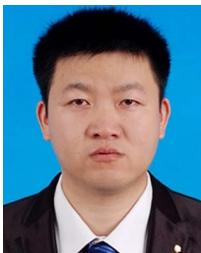
Bu Nie received the B.S. degree in material forming and control engineering from the Wuhan University of Technology in 2009. Since then, he has been an Engineer with the 722th Institute, China State Shipbuilding Corporation Ltd., Wuhan, China. His research interests include mechanical design and autonomous robots.
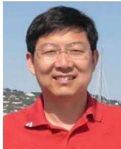
Qingquan Li received the Ph.D. degree in geographic information science and photogrammetry from the Wuhan Technical University of Surveying and Mapping, China, in 1998. From 1988 to 1996, he was an Assistant Professor with Wuhan University, where he became an Associate Professor in 1996 and has been a Professor since 1998. He is currently the President and a Professor of Shenzhen University, China; and the Director of the Shenzhen Key Laboratory of Spatial Smart Sensing and Service. He is also an Academician of the International Academy
of Sciences for Europe and Asia (IASEA). His research interests include precision engineering survey, pattern recognition, and intelligent transportation systems.
md/2022_A_Comparative_Analysis_of_LiDAR_SLAM-Based_Indoor_Naviga.md 预渲染生成。公式以 MathML 呈现，浏览器原生渲染，不依赖外部脚本或字体 CDN。